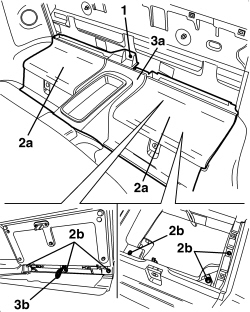
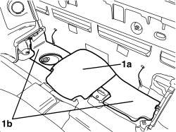

7040L51 REAR ODDMENTS COMPARTMENT SUPPORT - R.R.
- Path
- Procedures > 70 FITTINGS > 7040 BODY INTERIOR FITTINGS AND TRIM > 7040L PASSENGER COMPARTMENT FLOOR COVERING > 7040L51 REAR ODDMENTS COMPARTMENT SUPPORT - R.R.
- Kind
- repair procedure (removal / refitting; the operation number is the code)
- Applies to
- engines: 2.2 JTS, 3.2 JTS; all production periods; only with equipment: Spider
- Interactive page
- https://sloeber94.github.io/elrnDB-aBrrSpdr/en/#/946004132
Applies to: engines: 2.2 JTS, 3.2 JTS; all production periods; only with equipment: Spider
 Removing
Removing
 Refitting
RefittingOp. 7040H21 MOULDING ON PASSENGER COMPARTMENT REAR TRIM - R.R.
Op. 7040H22 PASSENGER COMPARTMENT REAR TRIM (SPIDER) - R.R.
Op. 7040L31 REAR ODDMENTS COMPARTMENT - R.R.
1. Undo the centre fixing bolt.
2. Working inside both compartments (2), undo the bolts (2b).
3. Remove the compartments mounting (3a) releasing the two emergency rods (3b) inside the two compartments.

Applies to: engines: 2.2 JTS, 3.2 JTS; all production periods; only with equipment: Spider
1. If necessary, remove the sound insulation (1a) and (1b).

Applies to: engines: 2.2 JTS, 3.2 JTS; all production periods; only with equipment: Spider
Refitting
Removing- Check that the compartments support is not damaged.
- If removed, position the sound insulation.
- Position the compartments mounting and attach the two emergency rods inside the two compartments correctly.
- Working inside both compartments, tighten the bolts.
- Tighten the centre fixing bolt.
- Check that the two emergency rods inside the two compartments are in the correct position.
Op. 7040L31 REAR ODDMENTS COMPARTMENT - R.R.
Op. 7040H22 PASSENGER COMPARTMENT REAR TRIM (SPIDER) - R.R.
Op. 7040H21 MOULDING ON PASSENGER COMPARTMENT REAR TRIM - R.R.
Topics linked from this page (3)
- 7040H21 MOULDING ON PASSENGER COMPARTMENT REAR TRIM - R.R.
- 7040H22 PASSENGER COMPARTMENT REAR TRIM (SPIDER) - R.R.
- 7040L31 REAR ODDMENTS COMPARTMENT - R.R.
Topics that link to this page (24)
- 1040A10 FUEL TANK - R + R AND DECANT FUEL
- 1040A14 FUEL TANK - R + R FOR REPLACEMENT
- 1040A70 SUBMERGED PUMP ASSEMBLY COMPLETE WITH LEVEL GAUGE CONTROL - R + R
- 1040B36 REAR FUEL DELIVERY LINE - R.R
- 1040B56 REAR FUEL RETURN PIPE - R.R.
- 5010B49 TUNNEL CONSOLE GLOVE COMPARTMENT AIR DUCT - R. R.
- 5010B86 CENTRE CONSOLE COOLING DUCT - R.R.
- 5505A68 CABLE LOOM FOR CONSOLE UNDER DASHBOARD AND/OR TUNNEL COVER - R.R. OR REPLACE
- 5550D18 HANDBRAKE ON WARNING LIGHT SWITCH - R+R
- 5570T96 REAR SIDE SPEAKER (ONE), LEFT OR RIGHT- R.R
- 5580C40 SIDE BAG SENSOR (ONE), LH OR RH - R.R.
- 5580E34 CAR ANTI-THEFT DEVICE ANTI-LIFT SENSOR - R.R. FOLLOWING ELECTRICAL CIRCUIT CHECK
- 5580H10 PARKING OBSTACLE DETECTION DEVICE ELECTRONIC CONTROL UNIT - R.R.
- 5580H12 PARKING OBSTACLE DETECTION DEVICE BUZZER - R.R.
- 5580T40 BOSE SOUND SYSTEM SUBWOOFER - R.R.
- 7030H14 HOOD - R.R.
- 7040H50 REAR PANEL (ONE), LEFT OR RIGHT - R.R
- 7040H53 MOULDING ON REAR SIDE PANEL (ONE), LEFT OR RIGHT - R.R.
- 7040H54 GRILLE FOR SPEAKER IN REAR SIDE PANEL (ONE), LEFT OR RIGHT - R.R.
- 7040L20 TUNNEL COVER - R.R
- 7040L74 TUNNEL TRIM MOUNTING BRACKET/SUPPORT - R.R.
- 7065A12 FRONT SEAT BELT (ONE), LEFT OR RIGHT, WITH PRETENSIONER ON REEL - R.R
- 7065A19 IDLER SUPPORT FOR FRONT SEAT BELT (ONE), LEFT OR RIGHT - R.R.
- 7210B71 BACKREST REAR PARTITION - R.R.